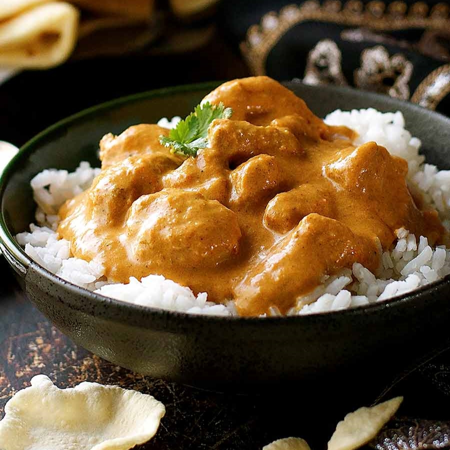

Butter Chicken

Instant Pot Butter Chicken
This is a super easy popular recipe. In under one hour you
will have restaurant-quality butter chicken at home!
Ingredients
- 1 14-ounce Canned Tomatoes
- 5-6 cloves Garlic
- 1-2 tsp Minced Ginger
- 1 tsp Tumeric
- 1/2 tsp Cayenne Pepper
- 1 tsp Smoked Paprika
- 1 tsp Salt
- 1 tsp Garam Masala
- 1 tsp Ground Cumin
- 1 pound Boneless Skinless Chicken Thighs
- 4 ounces Butter (cut into cubes)
- 4 ounces Heavy Cream
- 1 tsp Garam Masala
- 1/4-1/2 cup Chopped Cilantro
Instructions
-
Place all ingredients into an Instant Pot in the order listed,
EXCEPT for the butter, cream and 1 teaspoon of the garam masala,
mixing the sauce well before you place the chicken on top of the sauce.
If it's frozen, push it into the sauce a bit so it defrosts better.
-
Close the cooker and set for 10 mins on high, and let it release pressure
naturally for 10 minutes. After that, release all remaining pressure.
-
Open up the pot and remove the chicken carefully and set aside.
-
Blend together all the ingredients, preferably using an immersion blender.
-
Add the cut-up butter, cream, cilantro, and garam masala and stir until well incorporated.
-
It's best to let the sauce cool just a little before adding the butter and the cream.
Adding it into the boiling sauce will make your sauce very thin. If that happens,
just put it in the fridge for a little and let it thicken up.
It should be thick enough to coat the back of a spoon.
-
Take out half the sauce and freeze for later or store in the fridge for 2-3 days.
-
Add the chicken back in and heat through. Break it up into smaller pieces if you need but don't shred it.